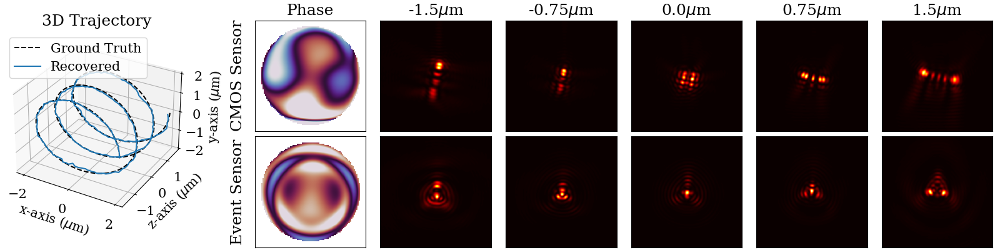
This CVPR paper is the Open Access version, provided by the Computer Vision Foundation.
Except for this watermark, it is identical to the accepted version;
the final published version of the proceedings is available on IEEE Xplore.
CodedEvents: Optimal Point-Spread-Function Engineering for
3D-Tracking with Event Cameras
Sachin Shah
Matthew A. Chan
Haoming Cai
Jingxi Chen
Sakshum Kulshrestha
Chahat Deep Singh
Yiannis Aloimonos
Christopher A. Metzler
University of Maryland, College Park
shah2022@umd.edu
Figure 1. CodedEvent Tracking. Left: example recovered trajectory using designed optics for an event camera. Right: top row, optimal
phase mask design and PSFs for a CMOS sensor, bottom row, our optimal phase mask design and PSFs for an event sensor.
Abstract
1. Introduction
Single-molecule localization microscopy (SMLM) is a vital
Point-spread-function (PSF) engineering is a well-
tool for resolving nano-scale structures with applications in
established computational imaging technique that uses
analysis of protein clusters [39], cell dynamics [62], and
phase masks and other optical elements to embed extra in-
electromagnetic effects [30]. Traditional SMLM experi-
formation (e.g., depth) into the images captured by con-
ments are limited by the slow capturing process of frame-
ventional CMOS image sensors. To date, however, PSF-
based CMOS sensors, preventing use in capturing high-
engineering has not been applied to neuromorphic event
speed, dynamic interactions. Recently, [9] showed event
cameras; a powerful new image sensing technology that re-
cameras are key to enabling high-speed 2D SMLM.
sponds to changes in the log-intensity of light.
In contrast to traditional CMOS cameras, event cameras
This paper establishes theoretical limits (Cram´er Rao
are an emerging class of bio-inspired neuromorphic sensors
bounds) on 3D point localization and tracking with PSF-
that operate with a high temporal resolution on the order
engineered event cameras. Using these bounds, we first
of µs. These sensors are comprised of an asynchronous
demonstrate that existing Fisher phase masks are already
pixel array, where each pixel records an event when the
near-optimal for localizing static flashing point sources
log intensity change exceeds a set threshold. In addition
(e.g., blinking fluorescent molecules). We then demonstrate
to having kilohertz time resolution, these sensors are low-
that existing designs are sub-optimal for tracking moving
power, resistant to constant background noise, and can op-
point sources and proceed to use our theory to design opti-
erate over a high dynamic range [14]. Already, these sen-
mal phase masks and binary amplitude masks for this task.
sors have proven useful in a range of applications includ-
To overcome the non-convexity of the design problem, we
ing object tracking [4, 60], gesture recognition [3, 32], and
leverage novel implicit neural representation based param-
robotics [24, 48].
eterizations of the phase and amplitude masks. We demon-
Just as PSF-engineering allows one to extract additional
strate the efficacy of our designs through extensive simula-
information using conventional CMOS sensors [52], we be-
tions. We also validate our method with a simple prototype.
lieve that event-camera-specific PSF engineering will be the
key to enabling high-speed 3D SMLM with event cameras.
25265
Unfortunately, existing PSF design theory is not equipped
to improve the imaging range. In particular, Shechtman et
for the event space. In this work, we bridge this gap by de-
al. finds the optimally informative PSF (dubbed the Fisher
veloping Cram´er Rao Bounds on 3D position estimation for
PSF) for a CMOS sensor to localize the 3D position of a sin-
event camera measurements. Leveraging these bounds, we
gle emitter [52]. A few other techniques for resolving the
subsequently develop a novel implicit neural representation
3D location of particles have been proposed such as light-
for optical elements to design components with improved
field-microscopy [37] and lensless imaging [35].
3D particle localization capabilities.
Unfortunately, these techniques are limited by the sub-
Specifically, our principal contributions are as follows:
kilohertz readout of conventional CMOS sensors. This hin-
• We derive the Fisher Information and Cram´er Rao
ders their use in imaging fast, dynamic processes such as
Bounds for event camera measurements parameterized by
blood flow [8] and voltage signals [1]. A few ultrafast imag-
3D spatial positions.
ing methods have also been proposed [15, 38, 63, 65] but
• We develop novel implicit neural representations for
require high-power illumination which can be phototoxic
learning both amplitude and phase masks.
to certain organic samples. Recently, event cameras have
• We identify new phase and amplitude designs for opti-
been proposed as an alternative to CMOS sensors for 2D
mally encoding 3D information with event cameras.
SMLM [9]. Another work proposes extending light-field-
• We demonstrate in simulation that our designs outperform
microscopy to event cameras to resolve 3D position but re-
existing methods at 3D particle tracking.
quires complex optical setups and sacrifices spatial resolu-
tion [20]. By designing optics to encode depth information
2. Related Work
into event streams, we can enable high-speed 3D SMLM.
2.1. Coded Optics
2.3. Depth Estimation
Specialized lenses have been shown to encode additional
Extracting 2D information from images tends to be a signif-
depth information in CMOS image frames. A ‘coded aper-
icantly easier task than extracting depth, hence, monocular
ture’ can produce depth-dependent blurs that enable one
depth estimation is often the bottleneck in 3D tracking per-
to extract depth by looking at the per-pixel defocus pat-
formance. Structured light projectors [16] or time-of-flight
tern [33]. Future works extend the ‘depth from defocus’
sensors [13] use active illumination to extract depth infor-
idea by leveraging information theory to design an opti-
mation. Given these methods’ reliance on an internal light
mal lens [27, 52]. More recently, researchers have proposed
source, performance can degrade in adverse lighting con-
optimizing optical parameters in conjunction with a neural
ditions. If we allow multiple views, stereo [21] or struc-
network reconstruction algorithm in an ‘end-to-end’ fash-
ture from motion [61] can triangulate 3D position. These
ion. This joint-optimization problem is difficult to optimize
methods are sensitive to occlusion and texture-less scenes
due to local minima. Many works have discussed mask pa-
and require multiple calibrated cameras. Many neural net-
rameterizations to stabilize optimization: Zernike basis [10,
work approaches with all-in-focus CMOS images as input
64] and rotationally symmetric [25]. However, direct pixel-
have been proposed [47, 59, 67, 68]. Recently, event-based
wise methods should be preferred due to their expressive-
depth estimation has made significant progress with neural
ness [36]. Dynamic pixel-wise masks have been proposed
networks [26, 42, 44, 53, 72]. Spiking neural networks have
as a training stabilization mechanism [50]. Specialized op-
been proposed for spiking cameras, which similar to event
tics have been explored for other applications such as super
cameras, offer asynchronous readout of pixels [69].
resolution [55], high-dynamic-range imaging [40], hyper-
spectral sensing [34], and privacy-preservation [22]. To our
3. Theory
knowledge, PSF engineering specifically for event-based
3.1. Event Camera Simulation
sensors has been relatively unexplored.
Let (x(t), y(t), z(t)) be the location of a point light source
2.2. Microscopy Tracking
at time t. We focus on tracking points around some focal
plane
Originally, single-particle localization was limited to 2D di-
z, with z(t) = z +
z(t) and z
|z(t)|. In this
context, a pin-hole camera would capture,
mensions, where only the x, y coordinates of an emitter are
recovered [57]. Similar to works on depth from defocus,
✓
◆
x(t)
y(t)
the depth of an emitter can be recovered from 2D measure-
It(u, v) =
u
f
, v
f
(1)
z +
z(t)
z +
z(t)
ments by considering a microscope’s PSF. A standard mi-
✓
◆
f
f
croscope typically has a PSF resembling the circular Airy
⇡
u
x(t), v
y(t)
(2)
pattern; however, because it spreads out quickly its depth
z
z
resolving range is limited. A few engineered PSFs—such
where is the Dirac Delta function. Because f and z are
as the double-helix PSF [46]—have since been proposed
constant, we will consider x(t) and y(t) pre-scaled for no-
25266
tation sake. In practice, a camera captures a blurry image
as the variance of the score:
depending on the point-spread-function (PSF) it induces. A
✓
◆ ✓
◆
PSF
@
@
h can be modeled with Fourier optics theory as a func-
I(✓)i,j = E
log f (X; ✓)
log f (X; ✓)
| ✓
tion of 3D-position x, y, z, amplitude modulation A caused
@✓i
@✓j
by blocking light, and phase modulation M caused by
(8)
phase mask height variation [18].
where ✓ is the set of parameters, ✓i is the ith parameter, and
⇥
⇤ 2
f (X; ✓) is a probability density function for the distribution
h = F A exp i DF (x, y, z) + i M
(3)
observation X is drawn from.
For traditional CMOS sensors, FI has been used to com-
where DF (x, y, z) is the defocus aberration due to the dis-
pare coded apertures and phase masks for a wide range of
tance from the camera. Then, a point light source at location
tasks such as depth estimation [45], hyper-spectral imag-
(x(t), y(t), z(t)) captured by a regular camera is
ing [5], and detecting linear structures [17]. Those works
have shown that the intrinsic photon shot noise in Ib can
Ibt(u, v) = [hz(t) ⇤ It](u, v)
(4)
be modeled as a Poisson random variable with mean
=
= h(x(t), y(t); z(t)).
(5)
h(x, y, z). We derive the FI matrix for an event sensor.
Flashing light. As a warm-up, consider the SMLM tech-
Note that because this PSF depends on depth, it can be
nique for event cameras presented in [9], which assumes a
used to encode depth information into Ib. Event cam-
blinking labeling model similar to STORM (stochastic opti-
eras trigger events with respect to the log of photocurrent
cal reconstruction microscopy) [49], PALM (photoactivated
L = log(Ib) [14] where a pixel’s photocurrent is linearly
localization microscopy) [7] and DNA-PAINT (DNA point
related to the wave intensity at that pixel. Specifically, an
accumulation for imaging in nano-scale topography) [51].
event is triggered when the absolute difference between the
With this idealized model of an event camera, log Ibt ⌧ = 0,
current intensity at t + ⌧ and the reference intensity from
so (7) reduces to
t,
L(u, v) = Lt+⌧ (u, v)
Lt(u, v), is greater than some
threshold T .
Ot = log Ibt.
(9)
8
>
By applying
<+1
L(u, v) > T
ex to the measurement, we can indirectly mea-
sure . Moreover, by applying standard results for FI of a
O
Ib
t(u, v) =
1
L(u, v) <
T
(6)
t
>
:
Poisson distribution [28, 58], we can write the FI matrix for
none otherwise
an event camera capturing a blinking particle as:
In isolation, each event contains little information; however,
N
X
✓
◆ ✓
◆
a sequence of events can be highly informative [2, 31, 54].
1
@h(n)
@h
I(✓)
z (n)
i,j =
(10)
Notably the inceptive event time-surfaces representation
h(n) +
@✓
@✓
n
i
j
suggests the trailing events that occur after the first event
correspond to the log-intensity change [6]. Therefore, by
where N is the number of pixels, h(n) is the PSF inten-
binning events over time, one can approximately recover
sity at pixel n,
is background noise, and ✓ = {x, y, z}
the change in log intensity
corresponds to the 3D location of a point source. Notice
L. Visuallly, we show the ac-
cumulated event frame approaches
that this is the same result as in [45], suggesting that — in
L as the number of
intermediate frames accumulated increases in Figure 2. We
the context of blinking particles — the Fisher mask found
prove this approximation is at most off by
in [52] for a traditional CMOS camera is also optimal for an
1 for an idealized
event camera in Section S4 of the supplement. Therefore,
event-based sensor.
our event measurement (6) can be simplified as,
Generalization. We now derive the positional information
content for any event measurement. Rewriting (7) with log-
arithmic rules, we obtain,
Ot = log Ibt
log Ibt ⌧ .
(7)
Ib
O
t
t = log
.
(11)
3.2. Information
Ibt ⌧
In the field of statistical information theory, the Fisher Infor-
The inner expression is drawn from the ratio of Poisson ran-
mation (FI) reports the amount of information gained about
dom variables with means t and t ⌧ . This can be approx-
the parameters of a distribution, given a measurement. As
imated as a single Normal distribution [19]:
such, we can use FI to express the effectiveness of PSFs at
✓
◆
2
encoding depth information. The multi-parameter FI is rep-
Ibt ⇠ N
t
,
t
+
t
.
(12)
resented as an
2
3
N ⇥ N matrix where the i, j entry is defined
Ibt ⌧
t ⌧
t ⌧
t ⌧
25267
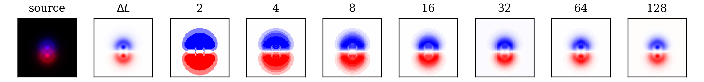
Figure 2. Binning events approximates the log difference as the number of accumulated frames increases. Consider a point source
moving from the blue location to the red location at depth plane 1µm over a fixed time interval in the first image. The second image
illustrates the direct access to the difference in (7), while the subsequent images demonstrate the effect of accumulating N event frames
across the time interval. Observe how large N nearly recovers L, demonstrating the validity of the approximation.
Similar to the flashing light example, we can exponentiate
4.2. Optical Parameter Representation
the measurement to recover this ratio. Using the symbolic
mathematics solver SymPy [41], we evaluate the expec-
PSF manipulation is typically achieved through designed
tation in (10) with
optical elements such as phase and amplitude masks. In
✓ = {xt, yt, zt, xt ⌧ , yt ⌧ , zt ⌧ } and
general, phase masks are preferred over binary amplitude
f (X; ✓) as the PDF of the normal distribution, yielding
2
3
masks for their photon efficiency and continuous parametric
a
a
a
b
b
b
representation, allowing for optimization via standard gra-
6a a a b b b7
dient descent methods. Inspired by [12], we demonstrate
N
X
6
7
DT D
6a a a b b b7
I(✓) =
6
7 (13)
that implicit neural representations can model phase masks
2 (µ + ⌫)2
6b b b c c c7
in such a way that results in more stable optimization and
n
6
7
4b b b c c c5
better-optimized mask designs. We use an architecture sim-
b
b
b
c
c
c
ilar to the sinusoidal representation network (SIREN) pre-
where
sented in [56] to predict the phase delay caused by the mask
at each location (u, v). Input data in R2 is processed by
µ = t ⌧ = h(xt ⌧ , yt ⌧ , zt ⌧ ) +
(14)
a four-layer multi-layer perceptron (MLP) with hidden fea-
⌫ = t = h(xt, yt, zt) +
(15)
ture size 128, and sin activation. We refer to this method as
@
Neural Phase Mask (NPM).
µi =
µ
(16)
@✓
Phase masks offer many degrees of freedom and excel-
i
@
lent light throughput, but can be relatively expensive to
⌫i =
⌫
(17)
@✓
manufacture and are only effective for some frequencies.
i
⇥
⇤
Meanwhile binary amplitude masks are cheap to manufac-
D = µx/µ µy/µ µz/µ ⌫x/⌫ ⌫y/⌫ ⌫z/⌫ (18)
ture (such as with consumer-grade 3D printers) and can
a = 2µ2⌫ + 4µ2 + 2µ⌫2 + 12µ⌫ + 9⌫2
(19)
operate across all frequencies (including x-ray), but offer
b =
2µ2⌫ + 2µ2 + 2µ⌫2 + 7µ⌫ + 6⌫2
(20)
fewer degrees of freedom.
Historically, methods for designing optimal binary aper-
c = 2µ2⌫ + µ2 + 2µ⌫2 + 4µ⌫ + 4⌫2
(21)
tures have been fundamentally limited due to the lack of op-
4. Method
timization techniques for discrete binary parameters. As a
result, prior works [33, 70, 71] walk over a restricted search
4.1. Objective Function
space, leaving ample room for improvement. To solve this
Similar to existing work on 3D tracking for CMOS sen-
issue, we propose a novel implicit neural representation for
sors, we can leverage the FI matrix to optimize optical pa-
binary amplitude masks. We use an MLP to predict the per-
rameters that efficiently encode depth information [52, 64].
cent of photons blocked at each mask location (u, v). The
Specifically, we compute the Cram´er Rao Bound (CRB),
input in R2 is processed by a four-layer MLP with hidden
which provides a fundamental bound on how accurately pa-
feature size 128 and SoftPlus [43] activation. The output to
rameters can be estimated given a measurement. If T (X)
the network is passed through a sigmoid. We refer to this
is the unbiased estimator for parameters ✓, then the CRB is
method as Neural Amplitude Mask (NAM).
⇥
⇤
5. Experimental Details
CRBi ⌘ I(✓) 1 cov
.
(22)
i
✓ (T (X ))i
Then, the objective function we wish to minimize is
PSFs are simulated for a microscope imaging system with
X X q
NA= 1.4, index of refraction n = 1.518, wavelength
LCRB =
[I(✓) 1]
(23)
i,i
= 550nm, magnification M = 111.11, 4f lens focal
z2Z i2✓
length f = 150mm, pixel pitch of 49.58µm, and resolution
where Z is a set of depth planes.
of 256 ⇥ 256. Each phase and amplitude mask is optimized
25268
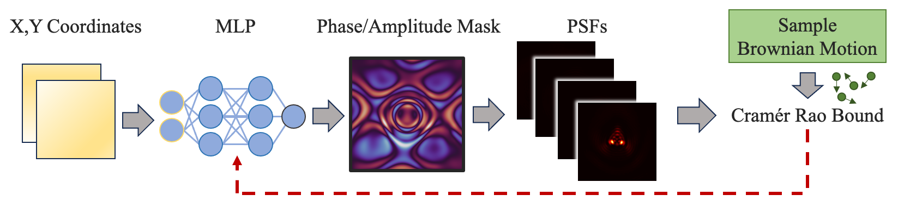
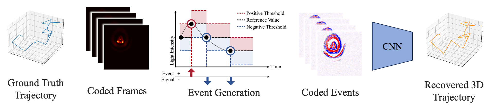
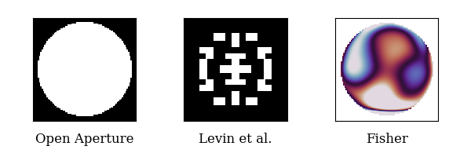
(a) Optical component optimization.
(b) Coded event 3D tracking
Figure 3. System overview. (a) An MLP produces a phase or amplitude mask based on a grid of x, y coordinates. The weights are updated
through back-propagation of the CRB computed with Brownian Motion. (b) In simulation, coded events are generated by first rendering
high-frame-rate coded CMOS frames and converting them to event frames. These measurements are passed to a 3D-tracking algorithm.
using LCRB for 10,000 epochs. Because particle motion in-
fluences FI, we leverage Monte Carlo sampling while train-
ing to maximize information content for all motion direc-
tions. For each epoch, we compute the total CRB for 3
random orthogonal motions across 11 depth planes. We
use the Adam [29] optimizer with parameters 1 = 0.99,
2 = 0.999, and a learning rate of 10 3. Training and test-
ing were conducted on NVIDIA RTX A5000 GPUs.
Figure 4. Visualization of non-event camera-specific optical
components. Each component is placed in the same plane as a
To validate our design’s ability to track point sources, we
150mm focal length lens.
train a Convolutional Neural Network (CNN) to map binned
event frames to 3D locations. Events are accumulated over
16 refresh cycles to produce an accumulated event frame.
ing with
These
2000 random starting positions and corresponding
256 ⇥ 256 single-channel images are processed by a
motion vectors. Each motion is scaled to have magnitude
CNN with 5 convolutional blocks and a linear output head.
drawn from
Each block is followed by batch normalization, ELU ac-
N (100nm, 20nm). For each position-motion
pair, we generate a
tivation [11], and max pooling. The output is a normal-
16 frame ‘coded’ CMOS video to ac-
cumulate into a ‘coded-event-frame’. The CNN is trained
ized length 3 vector representing the position of the particle
for 100 epochs with the Adam optimizer. We also manu-
at a given time step. The CNN is trained on 3 Brownian
facture a lab prototype to the demonstrate practical benefits
motion trajectories. Each trajectory is sampled at 16,000
of coded apertures for event cameras (see Section S1 in the
time steps. A ‘coded’ CMOS video frame is simulated
supplementary materials for details).
by blurring a 300nm emitter with the optical component’s
PSF for the location and adding Gaussian noise (to simu-
late other noise sources such as thermal). Next, we gener-
6. Results
ate a ‘coded-event-stream’ from the high-speed video using
standard event camera simulator methods by tracking the
Because designed optics for event cameras is an emerging
per-pixel reference signal [23]. Finally, we bin every 16
field, we compare our optimized phase and amplitude mask
frames to produce a 1000-frame ‘coded-event-video’. The
designs to components designed for traditional CMOS sen-
particle location at the end of the 16-frame bin is consid-
sors: open aperture/Fresnel lens, Fisher phase mask [52]
ered the ground truth position. We supplement this train-
and Levin et al.’s amplitude mask [33] (Figure 4).
25269
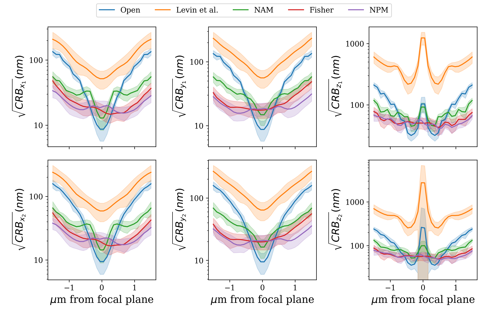
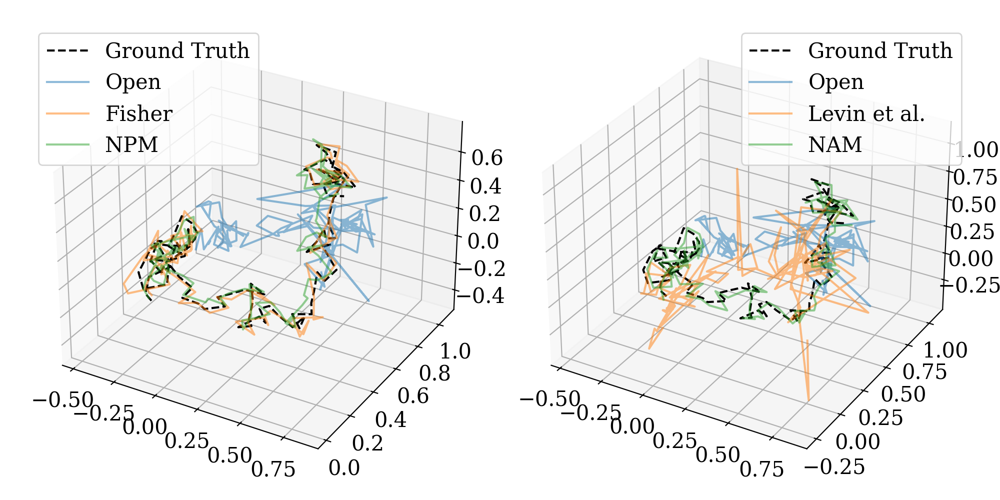
Component
CRB (nm) #
RMSE (nm) # L1 (nm) #
Open Aperture
80.8
Component
3D
z
Amplitude
Levin et al.
263.3
Open Aperture
617
936
NAM (Ours)
50.5
Amplitude
Levin et al.
764
1036
Phase
Fisher
36.3
NAM (Ours)
66.0
49.2
NPM (Ours)
33.1
Phase
Fisher
52.6
44.2
NPM (Ours)
51.2
39.2
Table 1. Average CRB for each optical component across a 3µm
depth range for all 6 position parameters. Phase masks outperform
Table 2. Tracking accuracy comparison. We present quantitative
amplitude masks due to higher light efficiency, and our neural-
results on 3D trajectory recovery for known optical designs. Our
designed phase mask is best.
event CRB loss function found the best-performing design. Al-
though only slightly improved in overall 3D tracking, our design
noticeably improves depth recovery.
Figure 6. Recovered 3D position over Brownian motion se-
quence with coded event frames. Left: phase mask meth-
ods, right: amplitude mask methods. Observe trajectories recon-
Figure 5. 3D localization CRB with respect to depth. First
structed from phase mask-coded events more closely align with
row: particle’s x, y, z position at time t
⌧ . Second row: par-
ground-truth positions. Units in microns.
ticle’s x, y, z position at time t. Observe the bound increases as
the source drifts from the focal plane.
6.2. 3D Tracking
We validate our theoretical results in simulation by track-
6.1. Cram´er Rao Bound
ing a 3D moving emitter across a 8µm ⇥ 8µm ⇥ 4µm vol-
ume. After training a CNN to decode 3D position from
We simulate Brownian motion by sampling
coded event frames, we evaluate our network tracking per-
1000 unit direc-
tion vectors and independently scaling them by a magnitude
formance on 5 sequences of Brownian motion, each con-
drawn from
sisting of
N (100nm, 20nm). The speed is relative to the
1000 binned frames. Table 2 shows our event
event camera refresh rate, with a
camera-specific optical designs minimize 3D tracking error
1000 accumulated-event-
frame per second system, this motion simulates a range of
more than conventional designs. Additionally, our method
biological processes such as molecular diffusion [66]. We
is substantially better at depth plane recovery. Qualitative
then evaluate the average CRB over the
results in Figure 6 demonstrate that 3D positions recovered
1000 motions at 30
depth planes spaced evenly on a
using our designs more tightly fit ground-truth trajectories.
3µm range around the focal
plane. For all 6 position parameters, we plot the CRB trend
with respect to depth (Figure 5). Observe that each opti-
7. Ablation Studies
cal system performs worse as a point source moves away
7.1. Optical Representations
from the focal plane as the defocus change decreases. Al-
though an open-aperture lens is slightly better around the
Additionally, we compare 3D tracking results using two
focal plane, its bound increases at a higher rate than the
different amplitude mask representations: pixel-wise and
other designs. We also report the average CRB over all pa-
neural amplitude mask (Figure 7) and three different phase
rameters and depth slices to demonstrate our neural-based
mask representations: pixel-wise, Zernike basis, and neural
phase mask is best overall (Table 1).
phase mask (Figure 8). As shown in Table 3, our implicit
25270
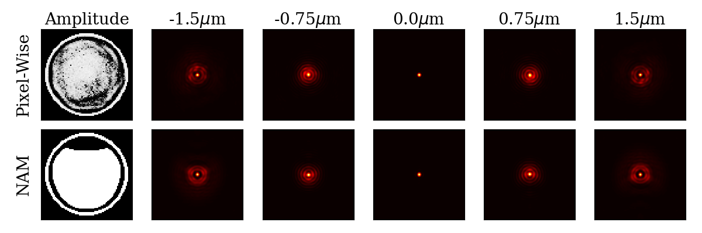
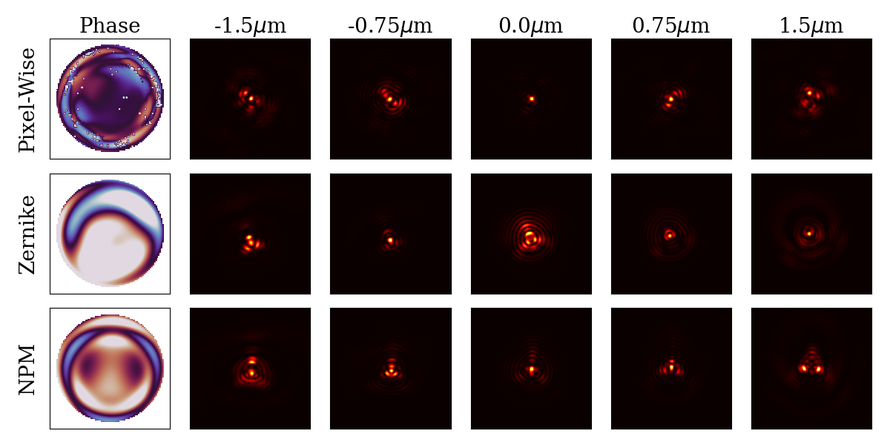
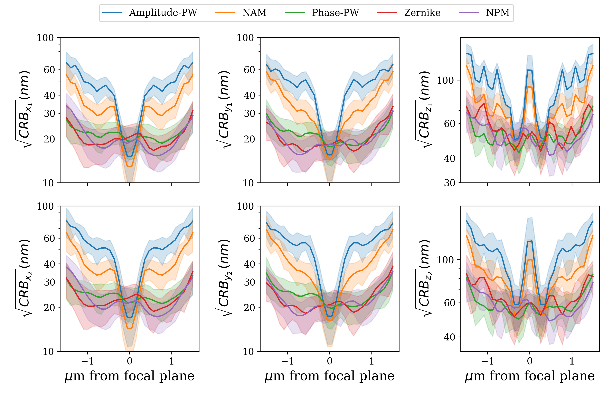
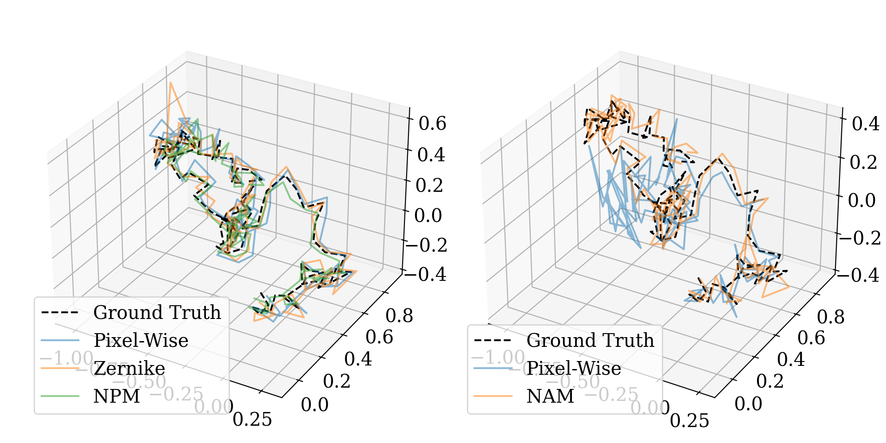
Figure 7. Designed amplitude masks and corresponding PSFs.
Top: pixel-wise representation. Bottom: implicit neural represen-
tation.
Figure 9. Effect of optical parameterization on 3D localization
CRB. First row: particle’s x, y, z position at time t
⌧ . Second
row: particle’s x, y, z position at time t. Our implicit neural rep-
resentations are particularly advantageous for amplitude masks.
RMSE (nm) # L1 (nm) #
Component
3D
z
Amplitude
Pixel-Wise
120
103
NAM
66.0
49.2
Figure 8. Designed phase masks and corresponding PSFs. Top:
Phase
Pixel-Wise
56.5
45.9
Zernike
51.3
50.2
pixel-wise representation. Middle: first 55 Zernike coefficients
Our NPM
representation. Bottom: implicit neural representation.
51.2
39.2
Table 4. Effect of optimized mask parameterization on track-
Representation CRB (nm) #
ing accuracy. Average distance between ground-truth Brown-
ian motion and the recovered 3D position is minimized with our
Amplitude
Pixel-Wise
65.5
NAM
50.5
neural-based designs.
Pixel-Wise
34.2
Phase
Zernike
34.8
NPM
33.1
Table 3. Average CRB of different optimized representations
across a 3µm depth range. Notice the neural representations out-
perform their pixel-wise counterparts.
neural representation-based methods achieve a lower aver-
age error bound than alternative representations, despite be-
Figure 10. Effect of optical representation on 3D trajectory re-
ing two times smaller than pixel-wise representations with
covery. Left: phase mask methods, right: amplitude mask meth-
respect to the number of parameters. As expected, phase
ods. Observe that neural representations produce tighter recon-
mask results generally outperform the amplitude mask re-
structions. Units in microns.
sults (Figure 9). However, our novel neural binary aperture
makes optimizing amplitude masks more tractable. We ob-
7.2. Tracking Limits
serve that pixel-wise representations not only yield difficult-
to-manufacture apertures but also suboptimal performance.
In this section, we explore the limits of 3D tracking with
In terms of 3D tracking, the implicit neural representations
variable external factors. For each experiment, we compute
produce a smaller error on average (Table 4) and more ac-
the average CRB over 30 depth slices and 6 parameters for 3
curately match sampled 3D trajectories (Figure 10).
orthogonal unit directions (x, y, and z). First, as the number
25271
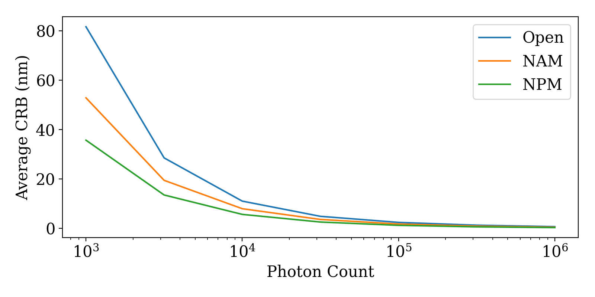
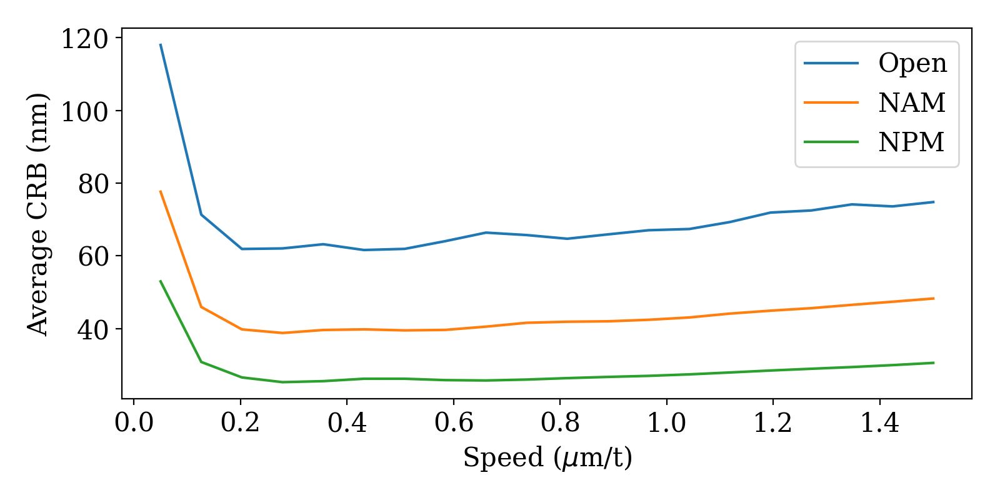
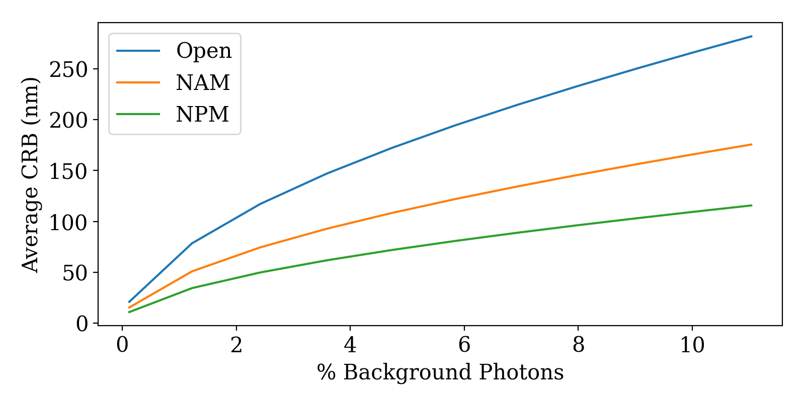
Figure 11. Flux effect on CRB. With more available photons, the
Figure 13. Background photon effect on CRB. As the percentage
signal-to-noise ratio increases, so the 3D information content is
of photons hitting the sensor due to background noise increases,
more reliable, and the bound on 3D tracking error decreases.
CRB also increases. The impact is minimal in our method.
8. Limitations
While we were successful in designing optics to im-
prove performance on 3D tracking with event cameras, our
method carries some limitations. First, although our binned
event frames can be obtained at kHz refresh rates, they
do not take full advantage of the asynchronous nature of
event cameras. Second, our bounds are for an idealized
event camera model with no read-noise. It would be im-
possible to outperform these bounds, but there might exist
a tighter bound that accounts for these hardware imperfec-
tions. Lastly, we only consider single-emitter images. With
Figure 12. Speed effect on CRB. Too-slow moving particles trig-
multiple point sources, the resolving accuracy between sin-
ger fewer events yielding a worse CRB. Similarly, as a particle
gle points may be more limited.
moves faster the delay between triggers leads to fewer events.
9. Conclusion
This work introduces PSF-engineering to neuromorphic
of available photons increases, the lower bound on 3D posi-
event-based sensors. We first derive information theoretical
tion estimation monotonically decreases (Figure 11). More
limits on 3D point localization and tracking. We demon-
available photons equate to a higher signal-to-noise ratio.
strate that existing amplitude and phase mask designs are
Additionally, this result helps explain why phase masks
suboptimal for tracking moving emitters and design new op-
outperform amplitude masks. Second, we show extremely
tical elements for this task. Additionally, to overcome the
slow-moving particles (less than nanometers per refresh
non-convexity of this optimization problem, we introduce
rate) experience a significantly higher CRB (Figure 12).
a novel implicit neural representation for optical compo-
Minimal movement indicates smaller intensity changes and
nents. Finally, we validate the effectiveness of our designs
thus an event camera would trigger fewer events. On the
in simulation and compare against state-of-the-art mask de-
other side, as a particle moves faster, the number of events
signs. Our work unlocks not only highly performant optics
will decrease as there is a non-zero delay between when
for event cameras but also the ability to design highly ex-
an event camera can trigger sequential events. Our learned
pressive elements for other sensors.
phase mask is more robust to speed changes than an open
aperture and our learned amplitude mask. Third, when the
Acknowledgements
percentage of photons due to background noise increases,
This work was supported in part by the Joint Directed En-
the bound on error also increases (Figure 13). We design
ergy Transition Office, AFOSR Young Investigator Program
our masks with 1% of captured photons attributable to the
award no. FA9550-22-1-0208, ONR award no. N00014-23-
background, but the learned designs are more resistant to
1-2752 and N00014-17-1-2622, Dolby Labs, SAAB, Inc,
degraded conditions than an open aperture.
and National Science Foundation grants BCS 1824198 and
We also explore the effect of modifying the accumulation
CNS 1544787. The support of the Maryland Robotics Cen-
period in Section S2 and how the optimal design changes
ter under a postdoctoral fellowship to C.S., is also gratefully
with respect to speed in Section S3 of the supplement.
acknowledged.
25272
References
single-molecule localization microscopy. Nature Photonics,
2023. 1, 2, 3
[1] Ahmed S. Abdelfattah, Jihong Zheng, Amrita Singh, Yi-
[10] Julie Chang and Gordon Wetzstein. Deep optics for monoc-
Chieh Huang, Daniel Reep, Getahun Tsegaye, Arthur Tsang,
ular depth estimation and 3d object detection. In Proc. IEEE
Benjamin J. Arthur, Monika Rehorova, Carl V. L. Ol-
ICCV, 2019. 2
son, Yichun Shuai, Lixia Zhang, Tian-Ming Fu, Daniel E.
Milkie, Maria V. Moya, Timothy D. Weber, Andrew L.
[11] Djork-Arn´e Clevert, Thomas Unterthiner, and Sepp Hochre-
Lemire, Christopher A. Baker, Natalie Falco, Qinsi Zheng,
iter. Fast and accurate deep network learning by exponential
Jonathan B. Grimm, Mighten C. Yip, Deepika Walpita, Mar-
linear units (elus), 2016. 5
tin Chase, Luke Campagnola, Gabe J. Murphy, Allan M.
[12] Brandon Y. Feng, Haiyun Guo, Mingyang Xie, Vivek Boom-
Wong, Craig R. Forest, Jerome Mertz, Michael N. Economo,
inathan, Manoj K. Sharma, Ashok Veeraraghavan, and
Glenn C. Turner, Minoru Koyama, Bei-Jung Lin, Eric Bet-
Christopher A. Metzler. Neuws: Neural wavefront shaping
zig, Ondrej Novak, Luke D. Lavis, Karel Svoboda, Wyatt
for guidestar-free imaging through static and dynamic scat-
Korff, Tsai-Wen Chen, Eric R. Schreiter, Jeremy P. Hasse-
tering media. Science Advances, 9(26):eadg4671, 2023. 4
man, and Ilya Kolb. Sensitivity optimization of a rhodopsin-
[13] Sergi Foix, Guillem Alenya, and Carme Torras. Lock-in
based fluorescent voltage indicator. Neuron, 111(10):1547–
time-of-flight (tof) cameras: A survey. IEEE Sensors Jour-
1563.e9, 2023. 2
nal, 11(9):1917–1926, 2011. 2
[2] Ignacio Alzugaray and Margarita Chli. Asynchronous corner
[14] Guillermo Gallego, Tobi Delbr¨uck, Garrick Orchard, Chiara
detection and tracking for event cameras in real time. IEEE
Bartolozzi, Brian Taba, Andrea Censi, Stefan Leutenegger,
Robotics and Automation Letters, 3(4):3177–3184, 2018. 3
Andrew J Davison, J¨org Conradt, Kostas Daniilidis, et al.
Event-based vision: A survey. IEEE transactions on pattern
[3] Arnon Amir, Brian Taba, David Berg, Timothy Melano, Jef-
analysis and machine intelligence, 44(1):154–180, 2020. 1,
frey McKinstry, Carmelo Di Nolfo, Tapan Nayak, Alexan-
3
der Andreopoulos, Guillaume Garreau, Marcela Mendoza,
[15] Liang Gao, Jinyang Liang, Chiye Li, and Lihong V. Wang.
Jeff Kusnitz, Michael Debole, Steve Esser, Tobi Delbruck,
Single-shot compressed ultrafast photography at one hun-
Myron Flickner, and Dharmendra Modha. A low power,
dred billion frames per second. Nature, 516(7529):74–77,
fully event-based gesture recognition system. In Proceed-
2014. 2
ings of the IEEE Conference on Computer Vision and Pattern
Recognition (CVPR), 2017. 1
[16] Jason Geng. Structured-light 3d surface imaging: a tutorial.
Adv. Opt. Photon., 3(2):128–160, 2011. 2
[4] Anastasios N. Angelopoulos, Julien N.P. Martel, Amit P.S.
[17] Bhargav Ghanekar, Vishwanath Saragadam, Dushyant
Kohli, Jorg Conradt, and Gordon Wetzstein. Event based,
Mehra, Anna-Karin Gustavsson, Aswin C. Sankara-
near-eye gaze tracking beyond 10,000 hz. IEEE Transactions
narayanan, and Ashok Veeraraghavan. Ps 2 f: Polarized spi-
on Visualization and Computer Graphics (Proc. VR), 2021.
ral point spread function for single-shot 3d sensing. IEEE
1
Transactions on Pattern Analysis and Machine Intelligence,
[5] Seung-Hwan Baek, Hayato Ikoma, Daniel S. Jeon, Yuqi
pages 1–12, 2022. 3
Li, Wolfgang Heidrich, Gordon Wetzstein, and Min H.
[18] Joseph W. Goodman. Introduction to fourier optics. Free-
Kim. Single-shot hyperspectral-depth imaging with learned
man, 2017. 3
diffractive optics. In Proceedings of the IEEE/CVF Interna-
[19] Tralissa F Griffin. Distribution of the ratio of two poisson
tional Conference on Computer Vision (ICCV), pages 2651–
random variables. Master’s thesis, Texas Tech University,
2660, 2021. 3
1992. 3
[6] R. Wes Baldwin, Mohammed Almatrafi, Jason R. Kaufman,
[20] Ruipeng Guo, Qianwan Yang, Andrew S. Chang, Guorong
Vijayan Asari, and Keigo Hirakawa. Inceptive event time-
Hu, Joseph Greene, Christopher V. Gabel, Sixian You, and
surfaces for object classification using neuromorphic cam-
Lei Tian. Eventlfm: Event camera integrated fourier light
eras. In Image Analysis and Recognition - 16th International
field microscopy for ultrafast 3d imaging, 2023. 2
Conference, ICIAR 2019, Proceedings, pages 395–403, Ger-
[21] R. I. Hartley and A. Zisserman. Multiple View Geometry
many, 2019. Springer Verlag. 3
in Computer Vision. Cambridge University Press, ISBN:
[7] Eric Betzig, George H. Patterson, Rachid Sougrat, O. Wolf
0521540518, second edition, 2004. 2
Lindwasser, Scott Olenych, Juan S. Bonifacino, Michael W.
[22] Carlos Hinojosa, Juan Carlos Niebles, and Henry Arguello.
Davidson, Jennifer Lippincott-Schwartz, and Harald F. Hess.
Learning privacy-preserving optics for human pose estima-
Imaging intracellular fluorescent proteins at nanometer reso-
tion. In Proceedings of the IEEE/CVF International Confer-
lution. Science, 313(5793):1642–1645, 2006. 3
ence on Computer Vision (ICCV), pages 2573–2582, 2021.
[8] Matthew B Bouchard, Brenda R Chen, Sean A Burgess,
2
and Elizabeth M C Hillman. Ultra-fast multispectral optical
[23] Y Hu, S C Liu, and T Delbruck. v2e: From video frames
imaging of cortical oxygenation, blood flow, and intracellu-
to realistic DVS events. In 2021 IEEE/CVF Conference
lar calcium dynamics. Opt Express, 17(18):15670–15678,
on Computer Vision and Pattern Recognition Workshops
2009. 2
(CVPRW). IEEE, 2021. 5
[9] Cl´ement Cabriel, Tual Monfort, Christian G. Specht, and Ig-
[24] Craig Iaboni, Himanshu Patel, Deepan Lobo, Ji-Won Choi,
nacio Izeddin. Event-based vision sensor for fast and dense
and Pramod Abichandani. Event camera based real-time de-
25273
tection and tracking of indoor ground robots. IEEE Access,
National Academy of Sciences, 118(3):e2004176118, 2021.
9:166588–166602, 2021. 1
2
[25] Hayato Ikoma, Cindy M. Nguyen, Christopher A. Metzler,
[39] Stephanie A Maynard, Philippe Rostaing, Natascha Schae-
Yifan Peng, and Gordon Wetzstein. Depth from defocus with
fer, Olivier Gemin, Adrien Candat, Andr´ea Dumoulin, Car-
learned optics for imaging and occlusion-aware depth esti-
men Villmann, Antoine Triller, and Christian G Specht.
mation. IEEE International Conference on Computational
Identification of a stereotypic molecular arrangement of en-
Photography (ICCP), 2021. 2
dogenous glycine receptors at spinal cord synapses. eLife,
[26] Daniel Gehrig Javier Hidalgo-Carrio and Davide Scara-
10:e74441, 2021. 1
muzza. Learning monocular dense depth from events. IEEE
[40] Christopher A. Metzler, Hayato Ikoma, Yifan Peng, and Gor-
International Conference on 3D Vision.(3DV), 2020. 2
don Wetzstein. Deep optics for single-shot high-dynamic-
[27] James M. Jusuf and Matthew D. Lew. Towards optimal point
range imaging. In IEEE/CVF Conference on Computer Vi-
spread function design for resolving closely spaced emitters
sion and Pattern Recognition (CVPR), 2020. 2
in three dimensions. Opt. Express, 30(20):37154–37174,
[41] Aaron Meurer, Christopher P. Smith, Mateusz Paprocki,
2022. 2
Ondˇrej ˇCert´ık, Sergey B. Kirpichev, Matthew Rocklin,
[28] Steven M. Kay. Fundamentals of Statistical Signal Process-
AMiT Kumar, Sergiu Ivanov, Jason K. Moore, Sartaj Singh,
ing. Prentice-Hall, 1 edition, 1993. 3
Thilina Rathnayake, Sean Vig, Brian E. Granger, Richard P.
[29] Diederik Kingma and Jimmy Ba. Adam: A method for
Muller, Francesco Bonazzi, Harsh Gupta, Shivam Vats,
stochastic optimization. In International Conference on
Fredrik Johansson, Fabian Pedregosa, Matthew J. Curry,
Learning Representations (ICLR), San Diega, CA, USA,
Andy R. Terrel, ˇStˇep´an Rouˇcka, Ashutosh Saboo, Isuru Fer-
2015. 5
nando, Sumith Kulal, Robert Cimrman, and Anthony Sco-
[30] Anika Kinkhabwala, Zongfu Yu, Shanhui Fan, Yuri Avla-
patz. Sympy: symbolic computing in python. PeerJ Com-
puter Science
sevich, Klaus M¨ullen, and W. E. Moerner. Large single-
, 3:e103, 2017. 4
molecule fluorescence enhancements produced by a bowtie
[42] Mohammad Mostafavi, Kuk-Jin Yoon, and Jonghyun Choi.
nanoantenna. Nature Photonics, 3(11):654–657, 2009. 1
Event-intensity stereo: Estimating depth by the best of both
worlds. In Proceedings of the IEEE/CVF International
[31] Xavier Lagorce, Garrick Orchard, Francesco Galluppi,
Conference on Computer Vision (ICCV), pages 4258–4267,
Bertram E Shi, and Ryad B Benosman. Hots: A hierarchy
2021. 2
of event-based time-surfaces for pattern recognition. IEEE
[43] Vinod Nair and Geoffrey E. Hinton. Rectified linear units im-
Trans Pattern Anal Mach Intell, 39(7):1346–1359, 2017. 3
prove restricted boltzmann machines. In Proceedings of the
[32] Jun Haeng Lee, Tobi Delbruck, Michael Pfeiffer, Paul
27th International Conference on International Conference
K J Park, Chang-Woo Shin, Hyunsurk Eric Ryu, and
on Machine Learning, page 807–814, Madison, WI, USA,
Byung Chang Kang. Real-time gesture interface based on
2010. Omnipress. 4
event-driven processing from stereo silicon retinas. IEEE
[44] Yeongwoo Nam, Mohammad Mostafavi, Kuk-Jin Yoon, and
Trans Neural Netw Learn Syst, 25(12):2250–2263, 2014. 1
Jonghyun Choi. Stereo depth from events cameras: Con-
[33] Anat Levin, Rob Fergus, Fr´edo Durand, and William T Free-
centrate and focus on the future. In Proceedings of the
man. Image and depth from a conventional camera with a
IEEE/CVF Conference on Computer Vision and Pattern
coded aperture. ACM transactions on graphics (TOG), 26
Recognition (CVPR), pages 6114–6123, 2022. 2
(3):70–es, 2007. 2, 4, 5
[45] Raimund J Ober, Sripad Ram, and E Sally Ward. Localiza-
[34] Lingen Li, Lizhi Wang, Weitao Song, Lei Zhang, Zhiwei
tion accuracy in single-molecule microscopy. Biophysical
Xiong, and Hua Huang. Quantization-aware deep optics
journal, 86(2):1185–1200, 2004. 3
for diffractive snapshot hyperspectral imaging. In 2022
[46] Sri Rama Prasanna Pavani, Michael A. Thompson, Julie S.
IEEE/CVF Conference on Computer Vision and Pattern
Biteen, Samuel J. Lord, Na Liu, Robert J. Twieg, Rafael Pies-
Recognition (CVPR), pages 19748–19757, 2022. 2
tun, and W. E. Moerner. Three-dimensional, single-molecule
[35] Fanglin Linda Liu, Grace Kuo, Nick Antipa, Kyrollos Yanny,
fluorescence imaging beyond the diffraction limit by using a
and Laura Waller. Fourier diffuserscope: single-shot 3d
double-helix point spread function. Proceedings of the Na-
fourier light field microscopy with a diffuser. Opt. Express,
tional Academy of Sciences, 106(9):2995–2999, 2009. 2
28(20):28969–28986, 2020. 2
[47] Ren´e Ranftl, Katrin Lasinger, David Hafner, Konrad
[36] Xin Liu, Linpei Li, Xu Liu, Xiang Hao, and Yifan Peng.
Schindler, and Vladlen Koltun. Towards robust monocular
Investigating deep optics model representation in affecting
depth estimation: Mixing datasets for zero-shot cross-dataset
resolved all-in-focus image quality and depth estimation fi-
transfer. IEEE Transactions on Pattern Analysis and Ma-
delity. Opt. Express, 30(20):36973–36984, 2022. 2
chine Intelligence, 44(3), 2022. 2
[37] A. Llavador, J. Sola-Pikabea, G. Saavedra, B. Javidi, and M.
[48] Juan Pablo Rodr´ıguez-G´omez, Raul Tapia, Maria del
Mart´ınez-Corral. Resolution improvements in integral mi-
Mar Guzm´an Garcia, Jose Ramiro Mart´ınez-de Dios, and
croscopy with fourier plane recording. Opt. Express, 24(18):
Anibal Ollero. Free as a bird: Event-based dynamic sense-
20792–20798, 2016. 2
and-avoid for ornithopter robot flight. IEEE Robotics and
[38] Yayao Ma, Youngjae Lee, Catherine Best-Popescu, and
Automation Letters, 7(2):5413–5420, 2022. 1
Liang Gao. High-speed compressed-sensing fluorescence
[49] Michael J Rust, Mark Bates, and Xiaowei Zhuang. Sub-
lifetime imaging microscopy of live cells. Proceedings of the
diffraction-limit imaging by stochastic optical reconstruction
25274
microscopy (storm). Nature Methods, 3(10):793–796, 2006.
Michael Z Lin, Kevin K Tsia, and Na Ji. Kilohertz two-
3
photon fluorescence microscopy imaging of neural activity
[50] Sachin Shah, Sakshum Kulshrestha, and Christopher A.
in vivo. Nat Methods, 17(3):287–290, 2020. 2
Metzler.
Tidy-psfs: Computational imaging with time-
[64] Yicheng Wu, Vivek Boominathan, Huaijin Chen, Aswin
averaged dynamic point-spread-functions. In Proceedings of
Sankaranarayanan, and Ashok Veeraraghavan. Phasecam3d
the IEEE/CVF International Conference on Computer Vision
— learning phase masks for passive single view depth esti-
(ICCV), pages 10657–10667, 2023. 2
mation. In 2019 IEEE International Conference on Compu-
[51] Alexey Sharonov and Robin M. Hochstrasser. Wide-field
tational Photography (ICCP), pages 1–12, 2019. 2, 4
subdiffraction imaging by accumulated binding of diffusing
[65] Sheng Xiao, John T. Giblin, David A. Boas, and Jerome
probes. Proceedings of the National Academy of Sciences,
Mertz. High-throughput deep tissue two-photon microscopy
103(50):18911–18916, 2006. 3
at kilohertz frame rates. Optica, 10(6):763–769, 2023. 2
[52] Yoav Shechtman, Steffen J. Sahl, Adam S. Backer, and W. E.
[66] Nicole J Yang and Marlon J Hinner. Getting across the cell
Moerner. Optimal point spread function design for 3d imag-
membrane: an overview for small molecules, peptides, and
ing. Phys. Rev. Lett., 113:133902, 2014. 1, 2, 3, 4, 5
proteins. Methods Mol Biol, 1266:29–53, 2015. 6
[53] Peilun Shi, Jiachuan Peng, Jianing Qiu, Xinwei Ju, Frank
[67] Wei Yin, Chi Zhang, Hao Chen, Zhipeng Cai, Gang Yu,
Po Wen Lo, and Benny Lo. Even: An event-based framework
Kaixuan Wang, Xiaozhi Chen, and Chunhua Shen. Metric3d:
for monocular depth estimation at adverse night conditions,
Towards zero-shot metric 3d prediction from a single image.
2023. 2
In Proceedings of the IEEE/CVF International Conference
[54] Amos Sironi, Manuele Brambilla, Nicolas Bourdis, Xavier
on Computer Vision (ICCV), pages 9043–9053, 2023. 2
Lagorce, and Ryad Benosman. Hats: Histograms of aver-
[68] Zunzhi You, Yi-Hsuan Tsai, Wei-Chen Chiu, and Guan-
aged time surfaces for robust event-based object classifica-
bin Li. Towards interpretable deep networks for monocu-
tion. In Proceedings of the IEEE Conference on Computer
lar depth estimation. In Proceedings of the IEEE/CVF In-
Vision and Pattern Recognition (CVPR), 2018. 3
ternational Conference on Computer Vision (ICCV), pages
[55] Vincent Sitzmann, Steven Diamond, Yifan Peng, Xiong Dun,
12879–12888, 2021. 2
Stephen Boyd, Wolfgang Heidrich, Felix Heide, and Gor-
[69] Jiyuan Zhang, Lulu Tang, Zhaofei Yu, Jiwen Lu, and Tiejun
don Wetzstein. End-to-end optimization of optics and image
Huang. Spike transformer: Monocular depth estimation for
processing for achromatic extended depth of field and super-
spiking camera. In Computer Vision – ECCV 2022, pages
resolution imaging. ACM Transactions on Graphics (TOG),
34–52, Cham, 2022. Springer Nature Switzerland. 2
37(4):114, 2018. 2
[70] Changyin Zhou and Shree Nayar. What are good apertures
[56] Vincent Sitzmann, Julien N.P. Martel, Alexander W.
for defocus deblurring? In 2009 IEEE International Con-
Bergman, David B. Lindell, and Gordon Wetzstein. Implicit
ference on Computational Photography (ICCP), pages 1–8,
neural representations with periodic activation functions. In
2009. 4
Proc. NeurIPS, 2020. 4
[71] Changyin Zhou, Stephen Lin, and Shree Nayar. Coded aper-
[57] Alex Small and Shane Stahlheber. Fluorophore localization
ture pairs for depth from defocus. In 2009 IEEE 12th In-
algorithms for super-resolution microscopy. Nature Meth-
ternational Conference on Computer Vision, pages 325–332,
ods, 11(3):267–279, 2014. 2
2009. 4
[58] Donald L. Snyder and Michael I. Miller. Random Point Pro-
cesses in time and space. Springer, 2 edition, 1991. 3
[72] Alex Zihao Zhu, Liangzhe Yuan, Kenneth Chaney, and
[59] Jaime Spencer, Richard Bowden, and Simon Hadfield.
Kostas Daniilidis. Unsupervised event-based learning of
Defeat-net: General monocular depth via simultaneous unsu-
optical flow, depth, and egomotion.
In Proceedings of
pervised representation learning. In IEEE/CVF Conference
the IEEE/CVF Conference on Computer Vision and Pattern
on Computer Vision and Pattern Recognition (CVPR), 2020.
Recognition (CVPR), 2019. 2
2
[60] Luc Tinch, Nitesh Menon, Keigo Hirakawa, and Scott Mc-
Closkey. Event-based detection, tracking, and recognition
of unresolved moving objects. Advanced Maui Optical and
Space Surveillance Technologies (AMOS) Conference, 2022.
1
[61] Carlo Tomasi and Takeo Kanade. Shape and motion from
image streams under orthography: a factorization method.
International Journal of Computer Vision, 9(2):137–154,
1992. 2
[62] Hippolyte Verdier, Franc¸ois Laurent, Alhassan Cass´e, Chris-
tian L. Vestergaard, Christian G. Specht, and Jean-Baptiste
Masson. A maximum mean discrepancy approach reveals
subtle changes in ↵-synuclein dynamics. bioRxiv, 2022. 1
[63] Jianglai Wu, Yajie Liang, Shuo Chen, Ching-Lung Hsu,
Mariya Chavarha, Stephen W Evans, Dongqing Shi,
25275